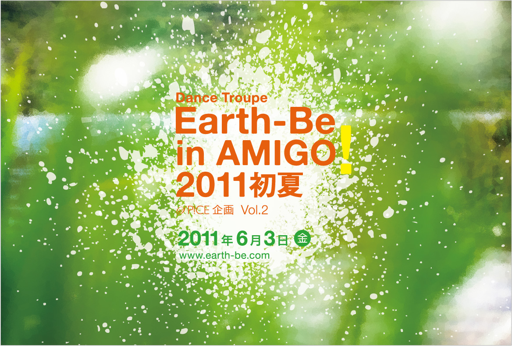
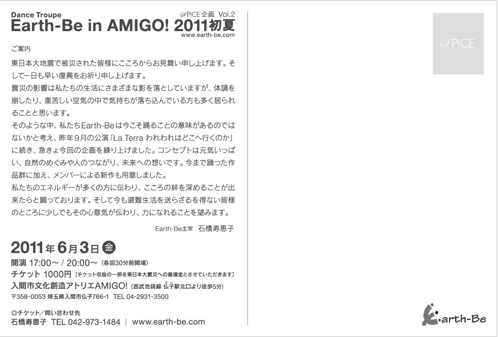

DANCE TROUPE Earth-Be SPICE企画 vol.2
【無事終演！】Earth-Be in AMIGO! 2011初夏
東日本大地震で被災された皆様にこころからお見舞い申し上げます。そして一日も早い復興をお祈り申し上げます。
震災の影響は私たちの生活にさまざまな影を落としていますが、体調を崩したり、重苦しい空気の中で気持ちが落ち込んでいる方も多く居られることと思います。
そのような中、私たちEarth-Beは今こそ踊ることの意味があるのではないかと考え、昨年9月の公演「La Terra われわれはどこへ行くのか」に続き、急きょ今回の企画を練り上げました。 コンセプトは元気いっぱい、自然のめぐみや人のつながり、未来への想いです。今まで踊った作品群に加え、メンバーによる新作も用意しました。
私たちのエネルギーが多くの方に伝わり、こころの絆を深めることが出来たらと願っております。 そして今も避難生活を送らざるを得ない皆様のところに少しでもその心意気が伝わり、力になれることを望みます。
Earth-Be主宰 石橋寿恵子
- 開演時間2011年6月3日（金）17:00～ / 20:00～ ※開場は開演の30分前
- 場所入間市文化創造アトリエAMIGO! ＞ 入間市文化創造アトリエAMIGO!公式サイト
- チケット全席自由 1,000円 残席僅か!!
- [TEL]042-973-1484（石橋） [mail] info@earth-be.com
問い合わせ・チケットのご購入

